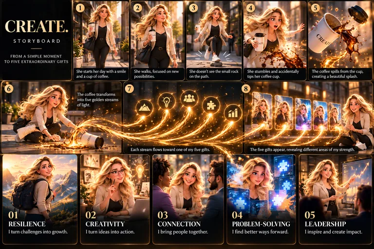

Jobs I can do
- QA / Software Tester
- Business Analyst
How I will grow it
- See challenges as opportunities.
- Keep a positive mindset.
- Learn from setbacks.
- Ask for support when needed.
- Stay focused on my long-term goals.
Olesia Dmytrush
Planetary Responsibility
I create possibilities through resilience, imagination, and connection. I don't wait for a perfect beginning — I make a beginning.
A spilled cup of coffee. A small rock on the sidewalk. One unexpected moment — and five gifts that define how I work.
Cinematic film of my avatar (rendered video) · golden streams rendered live in WebGL
The story in eight scenes
Select a scene to watch it in the film.
What the coffee revealed
Open a gift to see two jobs I can do with it and five ways I will keep growing it.
Behind the scenes
The original plan for the story — from a simple moment to five extraordinary gifts.

Open full size ↗Scene 08 · The ending
She regains her balance, smiles, and looks at what the spill created. I don't wait for a perfect beginning — I make a beginning.